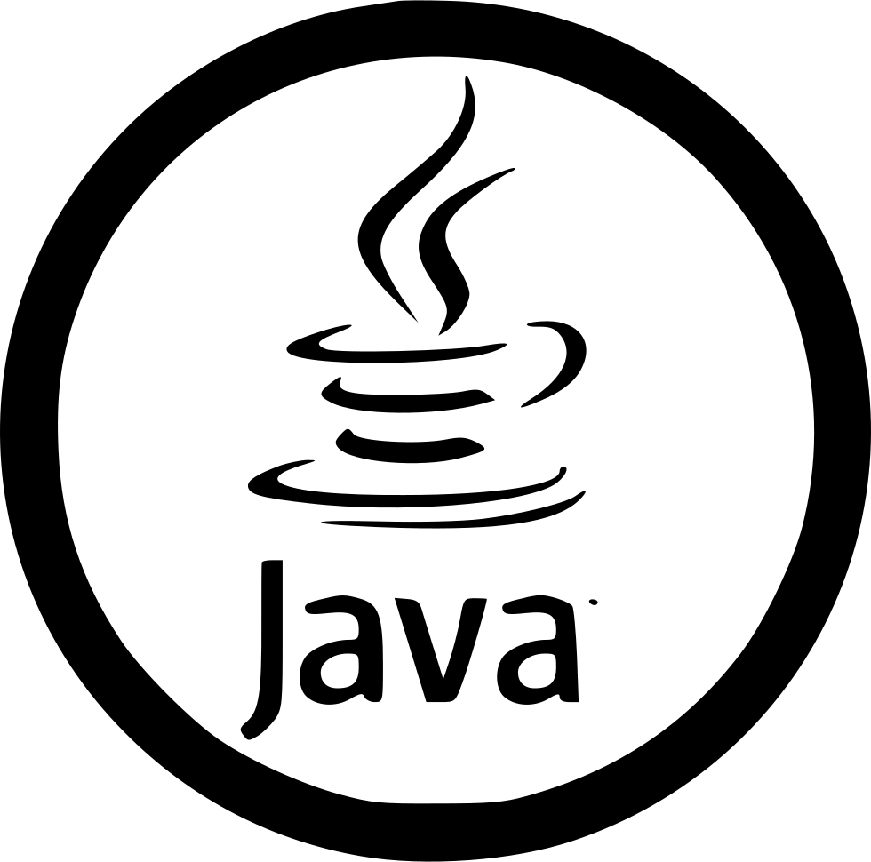

Skills

99%
97%
96%
99%

96%

97%
Hi, I'm Sourav Routray. I'm an undergraduate with a passion for Web Development. I'm eager to learn and
grow in my chosen field, and I'm confident that I have the skills and potential to be successful.
I'm passionate about my work because I love the creative process. I enjoy coming up with new ideas and
seeing them come to life. I'm also a big believer in the power of storytelling, and I love using my work
to tell stories that matter.
In my spare time, I enjoy playing online games and reading books. I'm also a big fan of The Avengers.
I'm always looking for new ways to learn and grow. I'm always taking online courses or, reading books to
stay up-to-date on the latest trends.
I'm looking for a position where I can use my skills and creativity to make a difference. I'm a hard
worker and I'm always willing to go the extra mile. I'm confident that I can be a valuable asset to your
team.
Thank you for your time and consideration.
Completed High-School from 'SARASWATI VIDYA MANDIR KESHAVDHAM' under Board of Secondary Education-BSE, Odisha with a percentage of 78.
Completed Higher Secondary School from the same school under Council of Higher Secondary Education-CHSE, Odisha with a percentage of 83.
Studying B.Tech in the field of Computer Science and Engineering at GITA Autonomous College Bhubaneswar, Odisha
Started working on Frontend Web Development projects.
Also Worked as a Web Develpoment
Intern in startup companies.